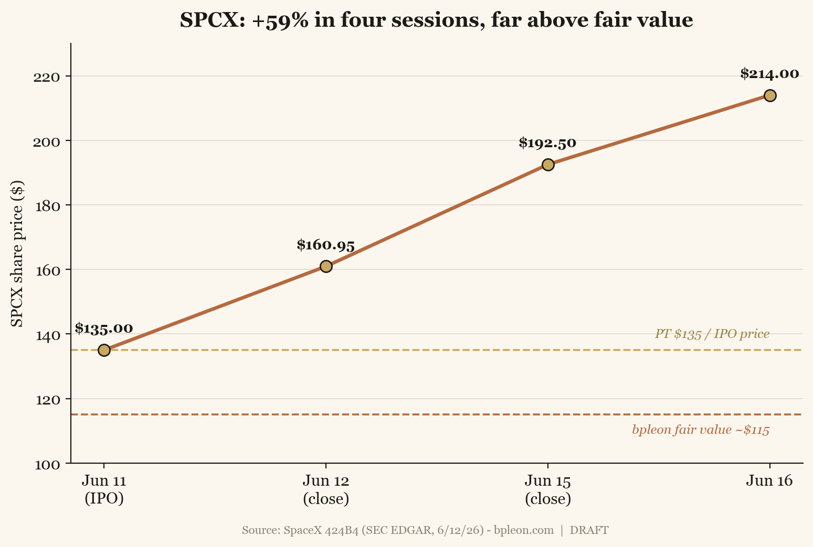
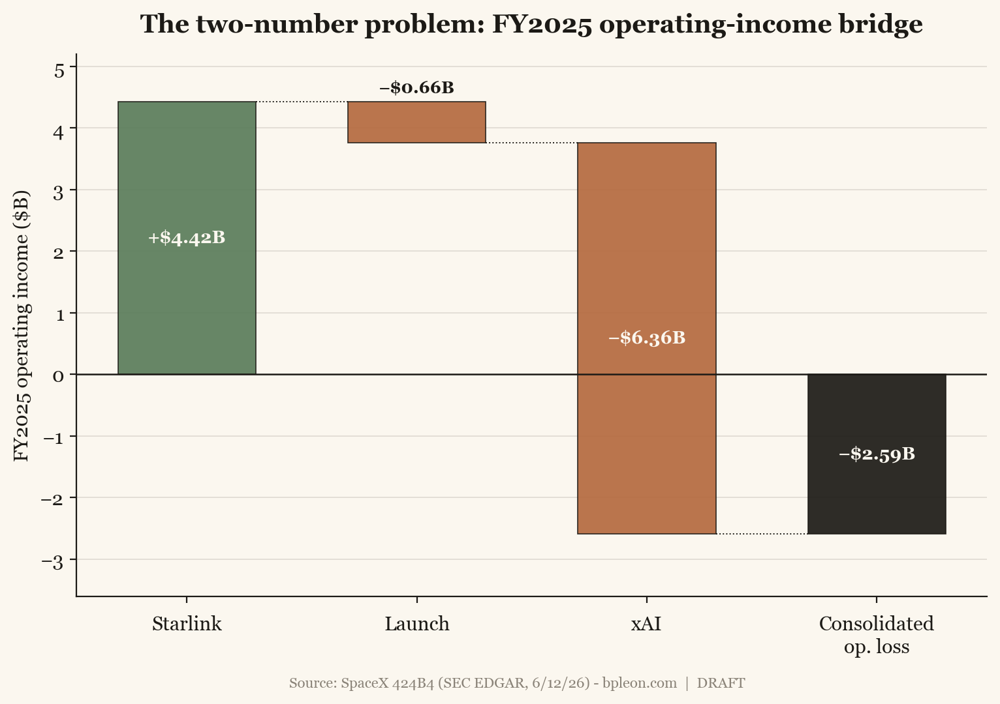
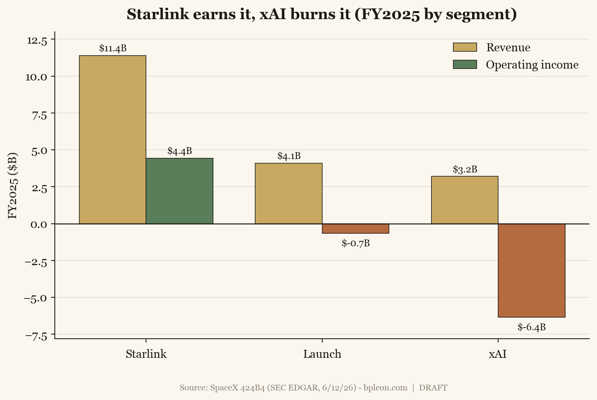
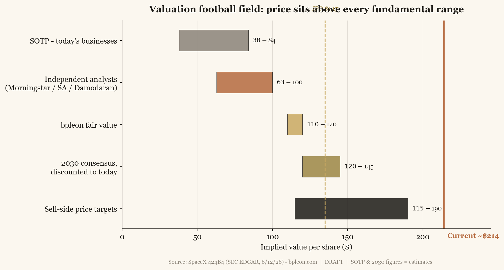
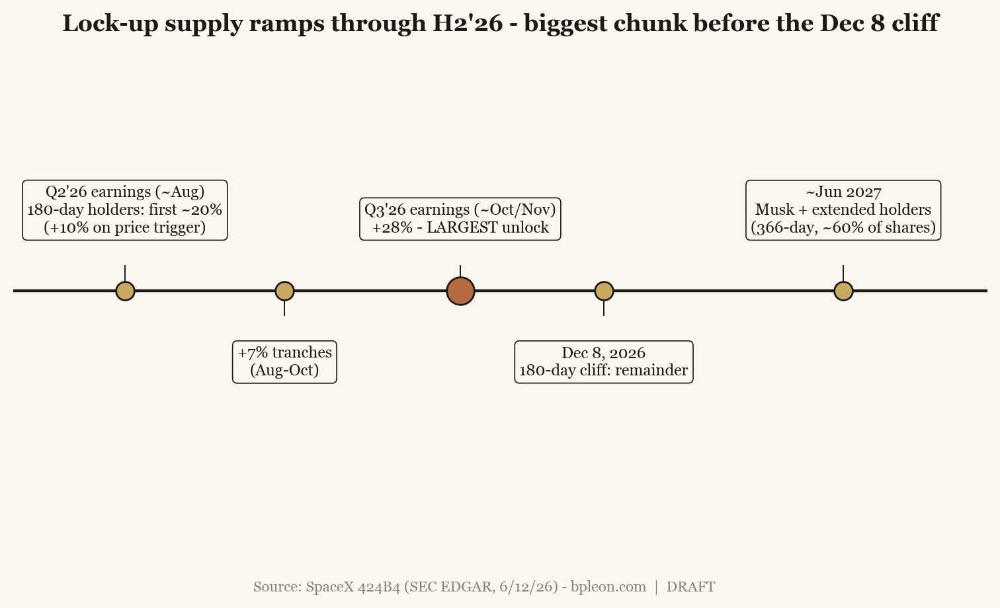

Coverage initiation · Space · Satellite broadband · AI · Nasdaq: SPCX
SpaceX — initiation. A world-class moat, priced for a flawless 2030.
On June 12, 2026, SpaceX became the largest IPO in history — $85.7B raised, a ~$1.75T open, ~$2.8T four sessions later. The enthusiasm is not crazy: this is, by a wide margin, the best operating business in space. Starlink is a near-monopoly compounding at ~50% with 63% segment EBITDA margins; the launch business flies more mass to orbit than the rest of Earth combined, and its two would-be Western rivals are — literally, this quarter — grounded.
The problem is arithmetic. At ~$2.8T the stock trades at ~140× sales on a business that lost $4.9B in 2025 and another $4.3B in Q1 2026 alone. Strip the hype to defensible parts and the company is worth ~$1.1–1.5T; the serious independent valuation work (Morningstar, Damodaran) lands at $63–100 a share. The entire gap above that is an unproven 2030 story — most of it an AI bet riding on cancellable compute-leasing and a founder who controls 82% of the votes with no independent board check.
Initiating at HOLD — fair value ~$115, 12-month probability-weighted target $135. You don’t short the best company in the sky into a thin-float, 100%-implied-vol melt-up. But you don’t chase it at 140× sales either. The trade that fits both the view and a cash balance is to sell the rich premium and set up to own the asset cheaper. Buyers under $120; sellers of premium today. Section 10 names exactly what flips this to Buy — and to Sell.
We drafted this initiation on June 16 with the tape at ~$214. We publish it with the tape at ~$159 (the July 2 close, the last session before the holiday weekend) — a 26% give-back in eleven sessions, on no change in the fundamental file. Scoring what the move does to the framework: the don’t-chase call did its work — the melt-up we refused to buy has round-tripped most of the post-IPO froth, and ~140× sales is now ~111× (rich, still). The sell-premium setup paid — puts struck in our $115–130 zone remain out of the money; the premium was the return.
The catalysts also firmed up: Nasdaq-100 inclusion is confirmed for July 7 — the fastest inclusion in the index’s history, worth an estimated ~$4.3B of passive buying at an under-1% index weight. A real, dated tailwind — but a smaller and better-defined one than the open-ended squeeze fuel the tape was pricing in mid-June.
Nothing in the move changes the rating: HOLD — fair value ~$115, 12-month target $135. Spot has closed most of the distance to the target — from ~59% above it to ~17% — and the buy zone under $120 is no longer an abstraction. The analysis below stands as written on June 16; where the tape matters, we say so.
1. The melt-up, in one picture
SPCX priced at $135 on June 11, closed its first session at $160.95 (+19%), and ran to ~$214 by June 16 — up roughly 59% in four trading days, on a float of about 4% of shares. Every serious estimate of what the company is worth sits below the IPO price, let alone the tape. That gap is the entire initiation.
Chart 1 — Four sessions, +59%
The price has detached from fair value on day one of trading.

IPO $135 (6/11) → $160.95 close (6/12) → ~$192.50 (6/15) → ~$214 (6/16). Dashed lines: our fair value ~$115 and 12-month target / IPO price $135. Source: SpaceX 424B4; closes via worker/StockAnalysis. Post-draft: the tape gave back ~26% to ~$159 by the July 2 close, the last session before this July 5 publication — see the update note above.
2. What you are actually buying
SPCX is not “SpaceX the rocket company.” After the February 2026 all-stock absorption of xAI (which had itself swallowed X/Twitter in 2025), the listed entity is a three-headed conglomerate: Launch, Starlink, and xAI/Grok. The 424B4 even restates history on a combined basis — so the “AI segment’s” 2023–24 numbers are mostly old Twitter.
This creates the two-number problem, and you must state which number you mean every time. Pure SpaceX (rockets + Starlink) is profitable, ~$15–16B revenue, a genuine compounder. Consolidated (what you buy) did $18.7B revenue but a $(4.9)B GAAP net loss, because xAI is incinerating cash.
And you are a passenger, not a partner. Musk holds 46.4% of the economics but 82.4% of the votes (Class B = 10 votes/share, 88.5% of the vote). It is a “controlled company” — no independent compensation or nominating committee. The prospectus says it plainly: “our Class A shareholders will not have the same protections afforded to shareholders of companies that are subject to all of the corporate governance requirements of Nasdaq.” Layer on Musk’s 1.3 billion restricted performance shares, vesting on market-cap milestones up to $6.565 trillion and — not a typo — a one-million-inhabitant Mars colony and 100 TW/yr of non-Earth data-center compute. This is a moonshot wrapped in a security. Price it as one.
3. Starlink — the engine, and it’s a good one
No hand-waving: Starlink is the real thing. FY25 revenue $11.4B (+49.8%), segment operating income $4.42B, adjusted EBITDA $7.17B (~63% margin) — the only profitable segment, and Q1’26 already ran $3.26B revenue / $2.09B segment EBITDA. Subscribers went from 2.3M at end-2023 to ~10.3M (Mar’26) to ~12M (June) — a ~97% CAGR.
The unit economics quietly inflected: terminal build cost cut ~50% (Bastrop), and no enterprise customer paying >$750K/yr has voluntarily cancelled since 2023. Blended ARPU is falling by design ($99 → $66) as growth mixes toward emerging markets — and in May 2026 they took the first price increase ever, the tell that land-grab is turning to monetization. Mobility is the margin story: maritime + aviation are ~4% of subs but ~24% of revenue. Direct-to-Cell is the option: T-Mobile’s “T-Satellite” is live, and the ~$17B EchoStar spectrum acquisition gives it real terrestrial-grade spectrum. Starshield (defense) added a $2.29B Space Force award on top of the $1.8B NRO deal.
The competition is mostly behind: Amazon’s Kuiper has ~230 of a required 1,618 satellites and is asking the FCC for an extension; China’s constellations are big but walled into non-Western markets. The one real threat is AST SpaceMobile in direct-to-cell, which just won FCC commercial authorization.
4. Launch — a moat that is widening in real time
SpaceX flew 170 times in 2025 — more orbital mass than the entire rest of the planet, ~85% of all satellites launched. Falcon is a cash cow: external launch revenue is ~$3–4B at an estimated ~80% gross margin, against an internal cost near $300/lb. [margin = estimate]
What makes the moat widen is the competition imploding on schedule: Blue Origin’s New Glenn exploded on the pad on May 28, 2026, destroying the vehicle and its only operational pad — and with it, Blue Moon’s only ride to the Moon. Rocket Lab’s Neutron slipped to Q4 2026 after a tank failure. ULA’s Vulcan flew once in 2025 and is capacity-constrained; its CEO left for Blue Origin.
The government franchise is deep (NSSL Phase 3, Commercial Crew, CRS) but — usefully for the bull — NASA is only ~5% of revenue, so the “government-dependent” bear case is weak. One honest nuance: headline launch revenue is shrinking as SpaceX cannibalizes external capacity to fly its own Starlinks. The cash-cow value is increasingly implicit (cheap internal launch) rather than booked.
5. Starship — the optionality and the gating risk
Everything above ~$135 ultimately leans on Starship working. It does not, yet. Flight 12 (May 22, 2026) debuted the V3 vehicle: the booster failed and crashed; the ship reached space, deployed 22 Starlink simulators, and splashed down intact — then the FAA grounded the program pending a mishap investigation.
The linchpin — orbital ship-to-ship cryogenic refueling — has never been demonstrated. SpaceX needs an estimated 8–16 tanker flights per mission (GAO) to fill a depot, against ~1%/day boiloff. This is the single milestone that unlocks Gen2/Gen3 Starlink economics, lunar landing, and the sub-$100/kg cost curve. Meanwhile HLS/Artemis III was reopened to competition (Oct 2025) on SpaceX’s slips; the crewed landing slipped to Artemis IV, no earlier than 2028.
6. The two-number problem, in numbers
All figures confirmed to the 424B4. The story the table tells: Starlink earns it, xAI burns it, and the burn is accelerating — Q1’26’s $(4.3)B loss nearly equals all of FY25.
| $M | FY2023 | FY2024 | FY2025 | Q1’26 |
|---|---|---|---|---|
| Revenue | 10,387 | 14,015 | 18,674 | 4,694 |
| Operating income/(loss) | (3,505) | 466 | (2,589) | (1,943) |
| Net income/(loss) | (4,628) | 791 | (4,937) | (4,276) |
| Adjusted EBITDA | — | — | 6,584 | 1,127 |
| Capex | 4,415 | 11,163 | 20,737 | 10,107 |
Segment FY25 (revenue / op inc / adj EBITDA, $M): Starlink 11,387 / 4,423 / 7,168 · Launch 4,086 / (657) / 653 · xAI 3,201 / (6,355) / (1,237). Source: SpaceX 424B4, SEC EDGAR (CIK 0001181412), 6/12/26.
Chart 2 — Starlink earns it, xAI burns it
FY2025 operating-income bridge: one green bar funds two red ones.

Segment operating income sums exactly to the consolidated $(2.59)B loss. Source: SpaceX 424B4.
Chart 3 — Revenue vs. profit, by segment
Only one segment’s bars are both tall and green.

FY2025 revenue (gold) and operating income (green/terracotta) by segment, $B. Source: SpaceX 424B4.
The saving grace is the balance sheet: post-IPO net cash ~$78B (cash+STI $23.7B, debt $29.1B, none due until Aug 2027) funds the burn for years. Backlog $27.6B; deferred revenue $13.2B. They will not run out of money. They will dilute your patience.
7. Valuation — why ~$214 didn’t clear
On today’s businesses (sum-of-the-parts): Starlink ~$275B + Launch/Starship ~$175B + xAI ~$250B ≈ $700B enterprise value; add ~$78B net cash and you get ~$59/share. Even a generous SOTP tops out near $84. Nothing on what exists today justifies the $135 IPO, let alone $214. [SOTP = estimate]
So the price is entirely a 2030 story. Grant the Street’s consensus — $226B revenue / $124B EBITDA by 2030 — put a 22× exit on it and discount back at 12%, and you get ~$120–145. Only Goldman’s super-bull ($352B EBITDA) clears the tape, and that requires the unproven AI ramp and Starship reuse and multiple expansion. The serious independents agree it’s rich: Morningstar $63–75, Damodaran $95–100 (calls $1.75–1.8T “30–44% too rich” and the prospectus’s $26T AI TAM “fantasy”), consensus 12-month target ~$152–164 — all below spot.
Chart 4 — The football field
Every fundamental range sits left of the price.

Implied value per share by method vs. the ~$214 tape (terracotta line) and $135 IPO (gold). Source: SpaceX 424B4; SOTP & 2030 figures are estimates.
For context, capital-intensive aerospace has never sustained software multiples. Even the frothiest new-space comps — RKLB ~91× sales, ASTS ~380× (pre-revenue) — sit below SPCX’s ~140×; the mature satcom names (IRDM ~7×, VSAT ~3×) trade like the utilities they are. We set fair value at ~$115 and a 12-month target of $135 — generous to the bull (it grants the 2030 consensus) and still ~35–45% below the price.
8. The trade — how we’d actually express this
A Hold on an un-shortable melt-up is not “do nothing” — it’s a setup. SPCX options began trading June 16 at 100%+ implied volatility, into a ~4% float, with the tape openly chasing a “gamma squeeze to $400.” The reflexive setup is real near-term — thin float + retail call-buying forces dealer hedging, and a confirmed ~$4.3B of Nasdaq-100 passive buying (July 7) stacks on the same float. So we won’t short it into July. But 100%+ IV plus a fundamentally rich stock you’d only want lower is a textbook sell-premium setup, not a buy-calls one:
- Income (with cash): sell cash-secured puts struck in the ~$115–130 zone — our fair value. You either keep a rich premium or get put a world-class asset near what it’s worth.
- Defined-risk income: bull put spreads near-term (with the flow); save bear call spreads / long put spreads for H2, into the lock-up unwind.
- Lottery (optional, ≤1–2%): a $250/$300 call spread, not naked calls — you don’t pay 100%+ IV for a squeeze everyone already sees.
Strikes and expiries move with the tape — the zones above are the framework; pull the live chain before writing anything. (With the last close at ~$159, the $115–130 put zone is closer and richer than when this was drafted.) This is strategy analysis, not personalized advice.
9. Catalysts & timeline
- July 7, 2026 (confirmed): Nasdaq-100 inclusion — the fastest in index history, est. ~$4.3B of passive buying at an under-1% weight. Dated, real, and already partly priced.
- Summer 2026: Starship return-to-flight + the orbital refueling demo — the milestone that matters most.
- First public earnings (Q2’26): the xAI revenue line and whether losses keep widening; triggers the first lock-up early-release (and a +10% release if the stock holds ≥30% above $135).
- Q3’26 results (~Oct/Nov): the +28% lock-up tranche — the largest single supply event — before the headline 180-day cliff on Dec 8, 2026.
- ~Mid-2027: earliest S&P 500 eligibility (blocked until then by the GAAP losses); Musk’s 366-day lock expires.
Chart 5 — The lock-up calendar
Supply ramps through H2’26 — the biggest chunk lands before Christmas.

Staged release for 180-day holders; Musk + extended holders locked 366 days (~June 2027). Source: SpaceX 424B4 underwriting / lock-up terms.
10. What would change our mind
Upgrade to Buy if: a clean orbital ship-to-ship refuel + ship reuse (de-risks the entire 2030 story); a pullback under ~$120; or hard evidence xAI is winning arm’s-length, durable AI revenue rather than cancellable compute leases.
Downgrade to Sell if: the stock holds >$200 into the December lock-up on no fundamental change; a Starship failure resets the optionality; xAI’s revenue misses badly or its legal exposure escalates; or any Musk key-person event — the prospectus itself calls him the company’s “most core asset” and “greatest risk variable.”
11. Key risks
Founder key-person and 82% control with no independent board check; xAI cash burn, customer-cancellation, and legal/regulatory exposure (an EU probe over Grok-generated deepfakes, the inherited Musk-v-OpenAI litigation); Starship execution and schedule; valuation/multiple compression; a thin float and a staged lock-up that floods supply through H2’26; related-party dealings across the Musk entities (a $4.5B Valor Equity sale-leaseback with a director conflict; Tesla Megapack purchases).
Coverage continues. The running thesis, valuation, and the gamma-harvest trade update as the data does — first earnings, the Starship refueling demo, and the Q3 lock-up are the next markers. More writing →
Disclosure. I/we have no position in SPCX at the time of publication — no shares, no options, and no indirect exposure taken for the purpose of this note. The premium-selling structures in Section 8 are framework, not fills; if I initiate any SPCX position, it will be disclosed in the next update on the name. I wrote this article myself, and it expresses my own opinions. I am not receiving compensation for it, and I have no business relationship with any company mentioned.
This note is independent equity-research commentary for general information only. It is not investment advice, not a recommendation to buy or sell any security, and not an offer or solicitation. The author is not a registered investment adviser or broker-dealer. Options strategies discussed are illustrative analyses of structures, not personalized recommendations; options involve substantial risk and are not suitable for all investors. Figures are sourced to SpaceX’s 424B4 prospectus (SEC EDGAR, CIK 0001181412, filed 2026-06-12) and other cited public sources; estimates and sum-of-the-parts figures are labeled as such and may be wrong. SPCX is a newly public, thin-float security with extreme volatility. Do your own work and consult a licensed professional before trading. © 2026 Brandon Leon · bpleon.com.